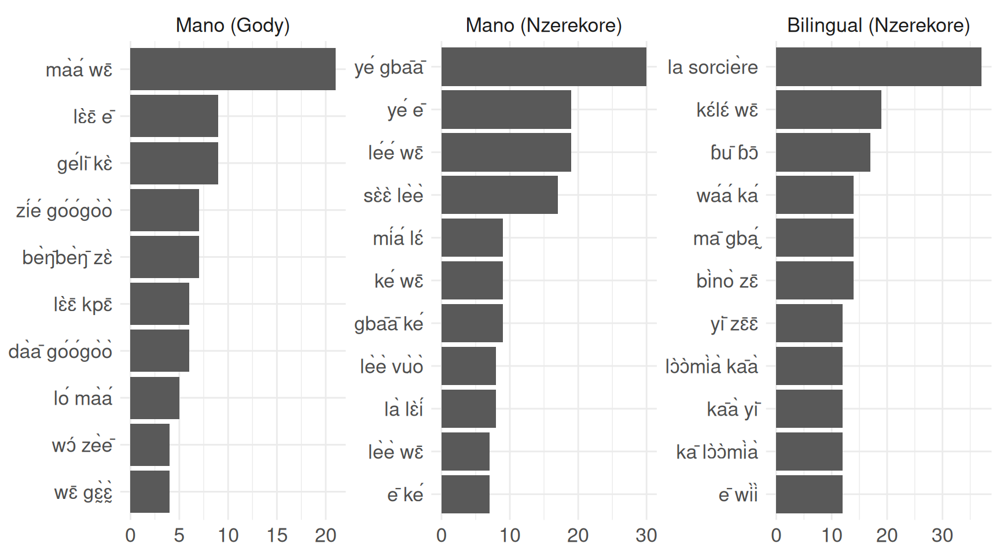

corpus |>unnest_tokens(input = text, output = word) |>count(soc, word) |>group_by(soc) |>slice_max(n, n =20) |>mutate(word =reorder_within(word, by = n, within = soc)) |>ggplot(aes(n, word))+geom_col()+facet_wrap(~soc, scales ="free")+scale_y_reordered()+labs(x =NULL, y =NULL)
Посмотрим на биграммы
Code
corpus |>unnest_tokens(input = text, output = ngram, token ="ngrams", n =2) |>count(soc, ngram) |>group_by(soc) |>slice_max(n, n =20) |>mutate(ngram =reorder_within(ngram, by = n, within = soc)) |>ggplot(aes(n, ngram))+geom_col()+facet_wrap(~soc, scales ="free")+scale_y_reordered()+labs(x =NULL, y =NULL)
Посмотрим на трииграммы
Code
corpus |>unnest_tokens(input = text, output = ngram, token ="ngrams", n =3) |>count(soc, ngram) |>group_by(soc) |>slice_max(n, n =20) |>mutate(ngram =reorder_within(ngram, by = n, within = soc)) |>ggplot(aes(n, ngram))+geom_col()+facet_wrap(~soc, scales ="free")+scale_y_reordered()+labs(x =NULL, y =NULL)
tf-idf
Посчитаем меру tf-idf для униграм, биграм и триграм
Code
corpus |>unnest_tokens(input ="text", output ="word", token ="words") |>count(soc, word, sort =TRUE) |>bind_tf_idf(word, soc, n) |>arrange(desc(tf_idf)) |>group_by(soc) |>slice_max(order_by = tf_idf, n =10) |>mutate(word =reorder_within(word, n, soc)) |>ggplot(aes(word, n)) +geom_bar(stat="identity") +facet_wrap(~ soc, scales ="free") +coord_flip() +scale_x_reordered() +labs(x =NULL, y =NULL)
Code
corpus |>unnest_tokens(input ="text", output ="ngram", token ="ngrams", n =2) |>count(soc, ngram, sort =TRUE) |>bind_tf_idf(ngram, soc, n) |>arrange(desc(tf_idf)) |>group_by(soc) |>slice_max(order_by = tf_idf, n =10) |>mutate(ngram =reorder_within(ngram, n, soc)) |>ggplot(aes(ngram, n)) +geom_bar(stat="identity") +facet_wrap(~ soc, scales ="free") +coord_flip() +scale_x_reordered() +labs(x =NULL, y =NULL)

Code
corpus |>unnest_tokens(input ="text", output ="ngram", token ="ngrams", n =3) |>count(soc, ngram, sort =TRUE) |>bind_tf_idf(ngram, soc, n) |>arrange(desc(tf_idf)) |>group_by(soc) |>slice_max(order_by = tf_idf, n =10) |>mutate(ngram =reorder_within(ngram, n, soc)) |>ggplot(aes(ngram, n)) +geom_bar(stat="identity") +facet_wrap(~ soc, scales ="free") +coord_flip() +scale_x_reordered() +labs(x =NULL, y =NULL)
Lexical diversity
Но я подумала что было бы интересно не самое частотное посчитать, а наоборот Предположительно оно должно различаться между группами
The American psychologist and speech pathologist Wendell Johnson (1939, 1944) proposed the type-token ratio (TTR) (Javris 2019)
Доля уникальных слов из всех слов. Размер — количество слов в тексте.
Я попробовал разные количества слов (20-30-40-50, больше тупо брать — совсем много пропусков буедт), но красные билингвы из Нзерекоре устойчивы, а синие-зеленые манцы перемешиваются, что в принципе подтверждает, что билингвы немного другие.
Векторизация
Я использую простенький word2vec и umap для уменьшения размерности:
Можно идти по этому списку, листая страницы и выписывать стопслова. Пожалуйста, копирую отсюда написание — я вносил правки в орфографию.
Code
corpus |>unnest_tokens(input = text, output = word) |>count(word, sort =TRUE)
Я забыл задачу, для которой мы это делали, если мы хотим что-то узнать про тексты, то тогда нужно грамматические, а не лексические, а если мы хотим по ним кластеризовать людей, то тогда лексические.
Количество фр. заимствований
Я буду считать, что ниже представлен список французского. Если я не прав, то скажи, я исключу что-то из списка.